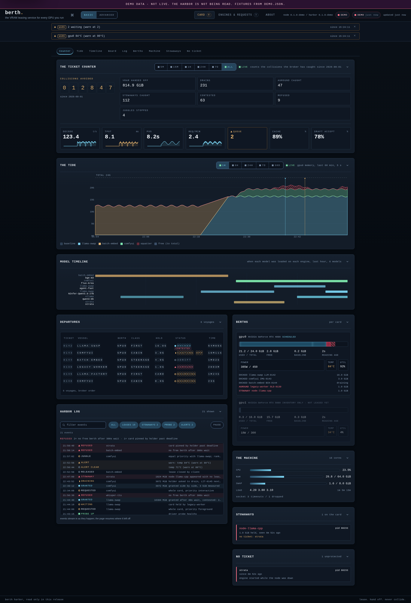

先交还显存，再启动下一项
本地工作站常常不是缺少另一个模型，而是缺少明确的交接。聊天服务驻留显存后，用户打开ComfyUI或游戏，可能需要手动找进程、卸载权重，再重启原来的服务。Berth把引擎启动包在租约里，排队决定显卡归属；当前请求或图像任务结束后再卸载，驱动确认显存已经释放才放行下一项。它可以管理多类引擎，而不只是切换同一个聊天服务器里的模型。系统报告未经过租约的显存占用，但不会把这些陌生进程直接杀掉，因此仍需要用户检查哪些应用没有接入。
Berth · 开源开发更新 · 原始代码与社区请求

本地工作站常常不是缺少另一个模型，而是缺少明确的交接。聊天服务驻留显存后，用户打开ComfyUI或游戏，可能需要手动找进程、卸载权重，再重启原来的服务。Berth把引擎启动包在租约里，排队决定显卡归属；当前请求或图像任务结束后再卸载，驱动确认显存已经释放才放行下一项。它可以管理多类引擎，而不只是切换同一个聊天服务器里的模型。系统报告未经过租约的显存占用，但不会把这些陌生进程直接杀掉，因此仍需要用户检查哪些应用没有接入。
在原始Reddit讨论中，一位用户想把批任务留到不工作或电价较低的时段。作者先解释已有后台队列，随后明确承认它此前并不理解一天中的时刻，并补上时段功能。11月2日15:13:29Z合入next分支的PR290允许设置23:00至07:00这样的跨午夜窗口。窗口外请求等待且不堵住其他任务；到截止时，正在处理的请求先完成，再释放租约。固定占用和最高保持优先级不能与该规则组合，因为两者不允许自动排空。这里有可核对的需求和实现，但不能把一次讨论推算成市场需求规模。
Harbor把当前持有者、显存历史、排队位置和引擎状态放进一个网页，手机布局把标签移到下方。等待提示比只有旋转图标更有用：用户可以知道是别的任务未结束，还是自己的允许时段尚未开启。仓库前两张界面图明确使用内置演示数据，第三张才标为真实节点的iPhone截图，不能拿演示数字证明节省了多少资源。遥测也区分驱动测量与引擎自行报告；未测得的启动时间不会填成一个看似精确的预测。界面能辅助诊断，但不会自动替用户判断哪个任务更重要。
项目使用Apache 2.0许可，当前支持重点是Linux与NVIDIA，Windows及部分AMD路径仍标实验性，Apple与Intel不在支持范围内。时段改动位于next，普通更新不会自动安装预发布版；尝试者应先备份配置并保留退回稳定版的方式。它解决的是共享调度，不是让装不下的模型凭空装进显存。可先用两个短任务验证等待、完成、释放和重新启动，再测试跨午夜窗口与守护进程重启后的状态。若接入配置比手动切换更费事，或频繁重载抵消节省，继续使用简单脚本可能更合适。